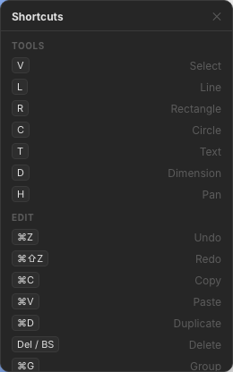

Interface
The Millrect window consists of a top toolbar and project tabs, a left tool palette, a central canvas, a right management panel, and a status bar at the bottom.

Toolbar (top)

| Button | Function | Shortcut |
|---|---|---|
| New / Open / Save | Create, open, or save a project | Ctrl+N / Ctrl+S |
| Import SVG | Import an external SVG into the current page | — |
| Place image | Place PNG / JPEG / WebP / SVG on the canvas as selectable image objects | — |
| Export SVG / PDF / JSON | Write drawings or the project to a file | — |
| 2D / 3D | Switch between the 2D drawing canvas and the 3D preview generated from the current drawing | — |
| Undo / Redo | Undo or redo shape edits | Ctrl+Z / Ctrl+Y |
| Left / Right panels | Toggle side panel visibility | — |
On macOS, use Cmd instead of Ctrl.
Project tabs
Just below the toolbar, browser-style project tabs let you keep several projects open at once and switch between them with a single click.
| Action | Description |
|---|---|
| Click a tab | Switch to that project |
| + button | Open a new tab (create a new project, or load a saved one) |
| × button / middle-click | Close the tab (pending changes are auto-saved first) |
- Each tab is auto-saved and remains as a saved project after you close it
- Copy & paste works across tabs — copy a shape in one tab and paste it into another
To save memory, only the active tab keeps its Undo / Redo history. Switching to another tab resets the original tab's history (the drawing itself is saved and never lost).
Tool palette (left)

The palette can be dragged anywhere on screen. In addition to the selection tool, it includes:
- Pan — Move the canvas (also: hold Space and drag)
- Rectangle / Circle / Line — Basic shapes (R / C / L)
- Pen (Bezier) — Free curves and closed outlines
- Text / Dimension — Annotations and dimensions (T / D)
Canvas (center)
The drawing area shows white paper and a grid.
- Zoom — Mouse wheel, +/- buttons at bottom right, or Ctrl+± / Ctrl+0
- Pan — Space + drag, or middle-button drag
- Snap — Auto-snap to endpoints, intersections, etc. (toggle in the Pages tab of the right panel)
- Shortcut list — ? button at bottom right (details)

The current zoom level (e.g. 339%) appears at the right end of the status bar.
Right panel
Four tabs manage project structure and settings.


| Tab | Contents |
|---|---|
| Layers | Add layers, show/hide, lock. Shapes are organized per layer. |
| Pages | Switch and add pages. Use Add page to choose face direction (top, front, side, etc.); existing faces cannot be added again. Paper, scale, Reference image, and project fonts also live in this tab. |
| Design | Edit coordinates, fill and stroke, line width, and other properties for the selected shape. For images, opacity and stored image size are shown. Bulk appearance changes when multiple shapes are selected. |
| History | View Undo / Redo history. |
Drag the right edge of the panel to change its width.
Reference image (in Pages tab)
Open the Reference image section to load a sketch or photo underlay. See 2D Drawing — Sketch import for the full workflow.
- Load image — place PNG / JPEG / WebP on the page background
- Move & resize — click to enter (blue highlight), drag on canvas, click again to exit (Esc or switching drawing tools also exits)
- Opacity — underlay strength
- Calibrate scale — click both ends of a known-length line on the underlay + real length (mm) + Apply in the calibration panel
- Confirm / remove ghosts — finalize or discard AI proposals (when using MCP)
Project fonts (in Pages tab)
Open the section Project fonts (optional) to show the Google Fonts UI. See 2D Drawing — Project fonts for details.
- Find fonts… — Search the Fontsource catalog (not installed PC fonts)
- This project — Fonts included in the current project JSON
- Library — Registered fonts reused across the app (+ adds to the project)
3D preview panel

A solid appears when you have two or more pages with views (e.g. top and front). Shape fill color is reflected in the 3D mesh (Color mapping). If views are insufficient, a guidance message explains which page to add. When you click 3D, the preview screen appears immediately and the mesh appears after generation finishes.
Status bar (bottom)
The thin bar below the canvas shows:
- XY — Cursor position (mm)
- TOOL — Current tool name
- SCALE — Page scale
- ZOOM — Display magnification
- Saved — Autosave status
Hide the left and right panels to maximize the canvas while drawing, and open the 3D preview only when you need to check the solid.